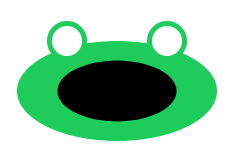
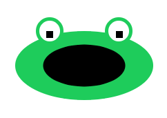

Help our froggy see and eat by using variables to draw his eyes and mouth.
利用變數來幫我們的小青蛙畫上眼睛和嘴巴讓牠能夠看和吃東西。

Our frog has no mouth! Use the ellipse function to draw a wide mouth on the frog's face, centering
the mouth at the same x and y as the face. Make it big enough to eat a lot of flies!
我們的青蛙沒有嘴巴！用ellipse函數畫一個大嘴巴在青蛙的臉上，嘴巴置中於臉一樣的x和y。要把嘴巴畫得夠大讓牠可以吃很多蒼蠅！
fill(___, ___, ___); ellipse(x, y, ___, ___);

The frog already has eyeballs, but no pupils. How will he find the tasty flies if he can't see them?? Draw them using two *rectangles*, and use the x and y coordinates to position them inside the eyeballs (adding or subtracting as necessary).,br> 這青蛙已經有眼球，但沒有瞳孔。看不到的牠怎能去找美味的蒼蠅呢？用兩個「矩形」來畫瞳孔，並用x和y座標來將它們定位於眼球内（按需要而加值或減值）
rect(x - ___, y - ___, 10, 10); rect(x + ___, y - ___, 10, 10);